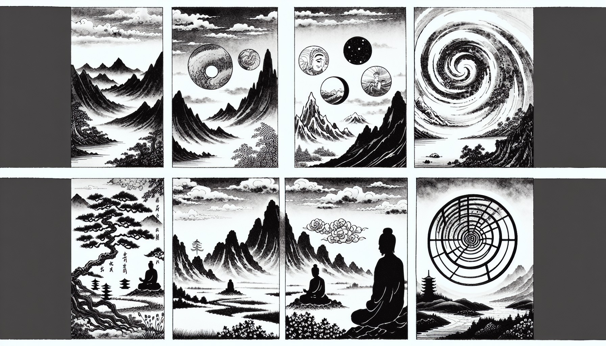

七十五巻 巻一覧
正法眼藏第27 夢中説夢
本紹介ページの導入・語彙・深掘り・クイズは tools/regen_volume_intro_from_corpus.py が OpenAI API で生成したものです（入力は当巻の原文からの短い抜粋のみ）。内容はモデル出力のため、重要箇所は必ず原文・教本と照合してください。
出典: https://shomonji.or.jp/zazen/doc/genzou.html
原文・現代語訳の全文は 全文ページを参照してください。
この巻の紹介（導入）
諸佛諸祖出興之道、それ朕兆已前なるゆゑに舊窠の所論にあらず。これによりて佛祖邊、佛向上等の功徳あり。
法輪轉また朕兆已前の規矩なり。このゆゑに、大功不賞、千古榜樣なり。これを夢中説夢す。
語彙の足場
- 夢中説夢：夢の中で夢を語ること。仏教においては、現実の認識と夢のような幻想の関係を示す概念であり、真理や悟りの探求において重要なテーマとなる。
- 法輪：仏教の教えや真理を象徴するもので、仏が教えを広める際に転じるとされる。法輪の転回は教えの普及を意味する。
- 菩提：悟りや覚醒を意味し、仏教の最終目的である。菩提を得ることで、真理を理解し、苦しみから解放されるとされる。
- 無上菩提：最高の悟りを指し、仏教においては最も高い境地である。無上菩提は、すべての存在の真実を理解することを含む。
- 證：真理や悟りを体験し、確認すること。仏教では、教えを学ぶだけでなく、実際に体験することが重視される。
原文（要点の抜粋）
当巻の冒頭付近からの短い抜粋です。長い引用は載せていません。 全文は全文ページを参照してください。出典はリポジトリ内 doc/正法眼蔵.txt です。原文の参照元: https://shomonji.or.jp/zazen/doc/genzou.html
諸佛諸祖出興之道、それ朕兆已前なるゆゑに舊窠の所論にあらず。これによりて佛祖邊、佛向上等の功徳あり。時節にかかはれざるがゆゑに壽者命者、なほ長遠にあらず、頓息にあらず。はるかに凡界の測度にあらざるべし。法輪轉また朕兆已前の規矩なり。このゆゑに、大功不賞、千古榜樣なり。これを夢中説夢す。證中見證なるがゆゑに夢中説夢なり。
この夢中説夢處、これ佛祖國なり、佛祖會なり。佛國佛會、祖道祖席は、證上而證、夢中説夢なり。この道取説取にあひながら佛會にあらずとすべからず、これ佛轉法輪なり。この法輪、十方八面なるがゆゑに、大海須彌、國土諸法現成せり。これすなはち諸夢已前の夢中説夢なり。徧界の彌露は夢なり、この夢すなはち明明なる百草なり。擬著せんとする正當なり、粉紜なる正當なり。このとき夢草中草説草等なり。これを參學するに、根莖枝葉、花果光色、ともに大夢なり。夢然なりとあやまるべからず。
しかあれば、佛道をならはざらんと擬する人は、この夢中説夢にあひながら、いたづらにあるまじき夢草の、あるにもあらぬをあらしむるをいふならんとおもひ、まどひにまどひをかさぬるがごとくにあらんとおもへり。しかにはあらず。たとひ迷中又迷といふとも、まどひのうへのまどひと道取せられゆく道取の通霄の路、まさに功夫參學すべし。
夢中説夢は諸佛なり、諸佛は風雨水火なり。この名號を受持し、かの名號を受持す。夢中説夢は古佛なり。乘此寶乘、直至道場なり。直至道場は乘此寶乘中なり。夢曲夢直、把定放行逞風流なり。正當恁麼の法輪、あるいは大法輪界を轉ずること、無量無邊なり。あるいは一微塵にも轉ず、塵中に消息不休なり。この道理、いづれの恁麼事を轉法するにも、怨家笑點頭なり。いづれの處所も恁麼事を轉法するゆゑに轉風流なり。このゆゑに、盡地みな驀地の無端なる法輪なり。徧界みな不昧の因果なり、諸佛の無上なり。しるべし、諸佛化道および説法蘊、ともに無端に建化し、無端に住位せり。去來の端をもとむることなかれ。盡從這裡去なり、盡從這裡來なり。このゆゑに、葛藤をうゑて葛藤をまつふ、無上菩提の性相なり。菩提の無端なるがごとく、衆生無端なり、無上なり。籠籮無端なりといへども、解脱無端なり。公案見成は放儞三十棒、これ見成の夢中説夢なり。
しかあればすなはち、無根樹、不陰陽地、喚不響谷、すなはち見成の夢中説夢なり。これ人天の境界にあらず、凡夫の測度にあらず。夢の菩提なる、たれか疑著せん。疑著の所管にあらざるがゆゑに、認著するたれかあらん、認著の所轉にあらざるがゆゑに。この無上菩提、これ無上菩提なるがゆゑに夢これを夢といふ。中夢あり、夢説あり、説夢あり、夢中あるなり。夢中にあらざれば説夢なし、説夢にあらざれば夢中なし、説夢にあらざれば諸佛なし、夢中にあらざれば諸佛出世し轉妙法輪することなし。その法輪は、唯佛與佛なり、夢中説夢なり。ただまさに夢中説夢に無上菩提衆の諸佛諸祖あるのみなり。さらに法身向上事、すなはち夢中説夢なり。ここに唯佛與佛の奉覲あり。頭目髓腦、身肉手足を愛惜することあたはず、愛惜せられざるがゆゑに、賣金須是買金人なるを、玄之玄といひ、妙之妙といひ、證之證といひ、頭上安頭ともいふなり。これすなはち佛祖の行履なり。これを參學するに、頭をいふには人の頂上とおもふのみなり。さらに毘盧の頂上とおもはず、いはんや明明百草頭とおもはんや、頭聻をしらず。
むかしより頭上安頭の一句、つたはれきたれり。愚人これをききて剩法をいましむる言語とおもふ。あるべからずといはんとては、いかでか頭上安頭することあらむといふを、よのつねのならひとせり。まことにそれあやまらざるか。説と現成する、凡聖ともにもちゐるに相違あらず。このゆゑに、凡聖ともに夢中説夢なる、きのふにても生ずべし、今日にても長ずべし。しるべし、きのふの夢中説夢は夢中説夢を夢中説夢と認じきたる。如今の夢中説夢は夢中説夢を夢中説夢と參ずる、すなはちこれ値佛の慶快なり。かなしむべし、佛祖明明百草の夢あきらかなる事、百千の日月よりもあきらかなりといへども、生盲のみざること。あはれむべし、いはゆる頭上安頭といふその頭は、すなはち百草頭なり、千種頭なり、萬般頭なり、通身頭なり。全界不曾藏頭なり、盡十方界頭なり。一句合頭なり、百尺竿頭なり。安も上も頭頭なると參ずべし、究すべし。
しかあればすなはち、一切諸佛及諸佛阿耨多羅三藐三菩提、皆從此經出も、頭上安頭しきたれる夢中説夢なり。此經すなはち夢中説夢するに、阿耨菩提の諸佛を出興せしむ。菩提の諸佛、さらに此經をとく、さだまれる夢中説夢なり。夢因くらからざれば夢果不昧なり。ただまさに一槌千當萬當なり、千槌萬槌は一當半當なり。かくのごとくなるによりて、恁麼事なる夢中説夢あり、恁麼人なる夢中説夢あり、不恁麼事なる夢中説夢あり、不恁麼人なる夢中説夢ありとしるべし。しられきたる道理顯赫なり。いはゆるひめもすの夢中説夢、すなはち夢中説夢なり。
このゆゑに古佛いはく、我今爲汝夢中説夢、三世諸佛也夢中説夢、六代祖師也夢中説夢（我れ今汝が爲に夢中説夢す、三世諸佛も也た夢中説夢す、六代祖師も也た夢中説夢す）。
この道、あきらめ學すべし。いはゆる拈花瞬目すなはち夢中説夢なり、禮拜得髓すなはち夢中説夢なり。
おほよそ道得一句、不會不識、夢中説夢なり。千手千眼、用許多作麼なるがゆゑに、見色見聲、聞色聞聲の功徳具足せり。現身なる夢中説夢あり、説夢説法蘊なる夢中説夢あり。把定放行なる夢中説夢なり。直指は説夢なり、的當は説夢なり。把定しても放行しても、平常の秤子を學すべし。學得するに、かならず目銖機𨨄あらはれて、夢中説夢しいづるなり。銖𨨄を論ぜず、平にいたらざれば、平の見成なし。平をうるに平をみるなり。すでに平をうるところ、物によらず、秤によらず、機によらず。空にかかれりといへども、平をえざれば平をみずと參究すべし。みづから空にかかれるがごとく、物を接取して空に遊化せしむる夢中説夢あり。空裡に平を現身す、平は秤子の大道なり。空をかけ物をかく、たとひ空なりとも、たとひ色なりとも、平にあふ夢中説夢あり。解脱の夢中説夢にあらずといふことなし。夢これ盡大地なり、盡大地は平なり。このゆゑに囘頭轉腦の無窮盡、すなはち夢裏證夢する信受奉行なり。
釋迦牟尼佛言（釋迦牟尼佛言く）、
諸佛身金色、百福相莊嚴。
図解（4コマ・AI生成）
教義の根拠は原文・出典に従い、漫画は比喩の補助に留めてください。

深掘り（読解の手掛かり）
- 夢中説夢は、仏教の教えにおける現実と幻想の関係を示す重要な概念である。
- 法輪の転回は、仏の教えが広まることを象徴し、教えの普及を意味する。
- 菩提は、仏教における悟りの状態を表し、無上菩提はその最高の状態を指す。
確認（形成評価）
各設問の下の「採点」で正誤を表示します（ブラウザ内のみ。ログは送りません）。